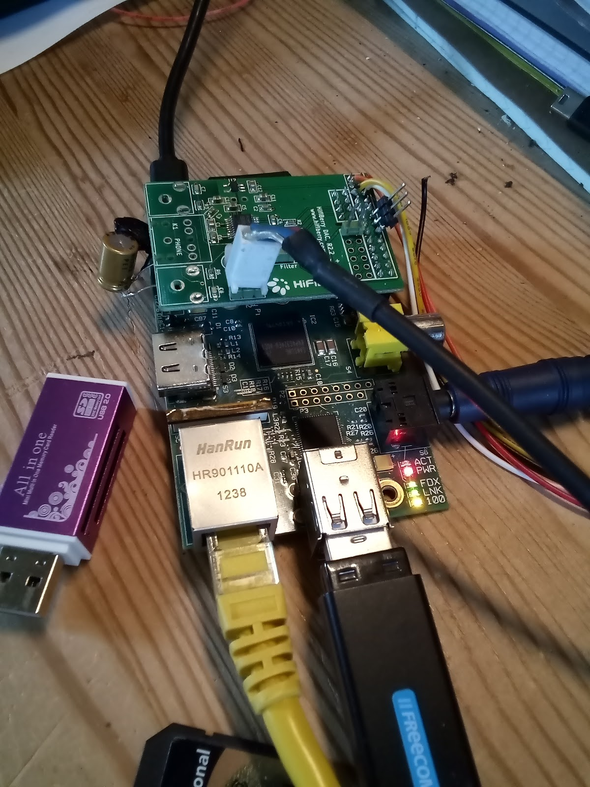
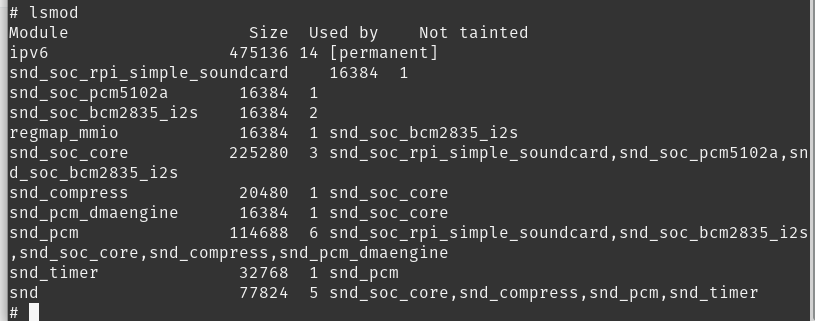
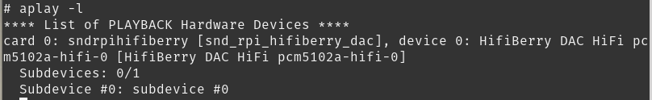

On the bench is an old Raspberry Pi with a HifiBerry DAC and a USB stick, taking what feels like forever to boot. The hardware is fine; the operating system is the problem.
It has been quite a while since I built my "audiophile" music player (raspberry-pi-with-balanced-output). It has been almost a decade now, and there are a zillion dedicated distros around to make this really easy. Just Google "RPI music player". All really nice and slick... but taking... ages... to boot, certainly on older Pis.
So while reviving this old project to include a transformer-balanced output (driven with a class A stage running an NE5532!), I worked my way through the big pile of clogged info to get a faster-booting system.


Now, the easiest way would be to get a custom-built image using a build system like Buildroot, Yocto or OpenWrt. I had a go at all of them, but the easiest way for a total noob like me to get going is to start with Buildroot. Follow the walk-through (maybe add an SSH client like Dropbear) and you will quickly get your own fast-booting image. That is: it isn't complicated, but the compilation takes hours!
The bit more nasty part comes when you want to take it further. Not many people talk about this, so for future reference, here are some reminders — as long as this is of any value in the always-changing, wonderful world of Linux. 😂
dtoverlays and audio
The RPi has its own rather special way of booting, at which time you can configure all kinds of hardware add-ons using so-called dtoverlays. If you have been working with an RPi and audio, you will have come across these. To configure them, edit the config.txt file in the "boot" partition of your disk image. (Sometimes it will have just a number instead of the name "boot".)
For a first test, add dtparams=audio=on to this file. This will select the on-board, shitty audio out. In theory. But the inner workings of Linux in these Buildroot builds don't seem to load the necessary kernel modules. Something with udev and dts/dto. Complicated stuff. Tell us when you know how to do this! I got it working with modprobe snd-bcm2835.
We did select the packages to get ALSA and other obvious stuff like MPD, MPC and a text editor in our simple build, right?
Now, to play some music from that USB stick, you will have to mount it first. blkid will give you a device name or UUID; create a mount point and mount it. Configure /etc/mpd.conf to point to that music directory, and add a default ALSA audio-out setting while you're there.
Restart MPD: first kill it by PID number found with ps, then start it with mpd (no sysctl or systemd in default BusyBox). Now mpc will hopefully have control and some information on MPD.
Now on to even more remarkably easy-to-forget nooks and crannies. We do want that I²S DAC thing running. In the picture is a simple I²S-slave interface that doesn't need any configuration by I²C. I think most of these simple boards will work; this one is an old HifiBerry DAC with a PCM5102A. That is a significant hint to get it going.
First, comment out dtparams=audio=on and add dtoverlay=hifiberry-dac in the aforementioned config.txt file. But you will not have any overlays in that "boot" directory, so download it from GitHub or strip it from another distro. Probably kernel versions and the .dtbo file will have some relation...
Now for the similar modprobing:


You need all four to get it going: snd-soc-bcm2835-i2s, snd-soc-core, snd-soc-pcm5102a, snd-soc-rpi-simple-soundcard.
Finally! Audio from your I²S board.
Now, to make it persistent after reboot, you have to make a little script in /etc/init.d. Give it a number somewhat lower than the MPD start-stop script, which in my case was S95. (That's a capital S!)


Don't forget to mount your USB music drive before starting MPD. I edited the MPD start script to mount the drive; the usual fstab method doesn't work too well. Presumably the default MPD start script will be started before the USB drive is ready for mounting.
GPIO, and one more thing
Other nice stuff to implement: we can use sysfs kernel modules to manipulate GPIO ports. Make sure the pins are not in use for other functions (like I²S, duh). Here is a small script:
#!/bin/sh
# gpio17 to drive an LED:
echo 17 > /sys/class/gpio/export
echo out > /sys/class/gpio/gpio17/direction
# gpio27 to have a push button to do "mpc next":
echo 27 > /sys/class/gpio/export
echo in > /sys/class/gpio/gpio27/direction
while true
do
if mpc status | grep -q 'playing'; then
echo 1 > /sys/class/gpio/gpio17/value
else
echo 0 > /sys/class/gpio/gpio17/value
fi
if cat /sys/class/gpio/gpio27/value | grep -q '1'; then
mpc next
fi
sleep 0.5
doneOh, and one more thing: before starting to use something like Buildroot, think of a way to separate everything from your everyday work computer. It will make a big mess if you don't. I used VMware. Do configure plenty of drive space!